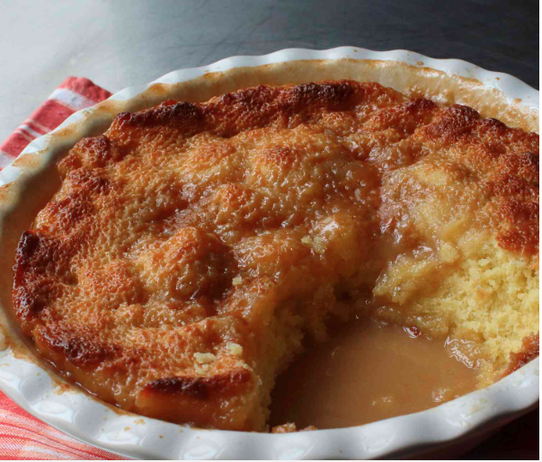

Pouding Chomeur

Description
Pouding chômeur, or "unemployed person's pudding," is a classic French-Canadian dessert with humble origins rooted in Quebec's economic history.
Created during the Great Depression in the early 20th century, it was a simple yet ingenious creation born out of necessity.
The dessert consists of a rich cake batter poured over a layer of brown sugar and butter, then baked until the cake rises and forms a golden crust while the sugar and butter create a decadent caramel sauce at the bottom.
Originally devised as an affordable treat using readily available pantry ingredients, pouding chômeur quickly became a beloved comfort food among working-class families. Despite its modest beginnings, it has endured as a cherished symbol of resilience and resourcefulness in Quebecois culinary culture, celebrated for its comforting flavors and nostalgic appeal.
Ingredients
For Syrup:
- 2 cups of maple syrup
- 2 cups heavy cream
For the Batter:
- 3/4 cup unsalted butter (room temperature)
- 3/4 cup white sugar
- 1/4 teaspoon vanilla extract
- 2 eggs (room temperature)
- 1 teaspoon fine salt
- 1/2 teaspoon fine salt
- 1 3/4 cups all-purpose flour
Steps
- Preheat the oven to 425 degrees F (220 degrees C). Butter a deep baking dish and place it on a sheet pan.
- Bring maple syrup and heavy cream to a boil in a deep saucepan over medium-high heat. Turn off heat once mixture starts to bubble, stir, and set aside.
- Beat butter and sugar together in a bowl using a spatula or electric mixer until creamy and well combined. Whisk in vanilla extract and 1 egg until incorporated. Mix in the other egg. Sprinkle in baking powder, salt, and flour. Mix with a spatula until batter is just combined.
- Transfer batter to the prepared dish and pour the maple-cream sauce on top, stopping between 1/2 to 1-inch from the top of the dish. Reserve any extra sauce.
- Bake in the center of the preheated oven until pudding is golden brown and a toothpick inserted into the center comes out mostly clean, about 30 minutes. Let cool for 10 minutes; serve pudding with any extra maple-cream sauce.